Music Portfolio
Evan joined the Pierce College concert band in April of 2020 when he started studying music at Pierce College.
Under the direction of Dr. Kaitlin Bove, Evan performed with the group as a percussionist until he finished his credit requirements in March of 2022. He would continue to perform with the group as a community member.
In September 2022, Dr. James Doyle took over as Interim Director until January, where Corrine Smith would continue in this role. Dr. Joseph Scott would become the full-time director for the group in September 2023.
Evan continues to play with the group today as principal percussionist, an educator for the groups members and an advisor to the director for all percussion manners.
Pierce College Concert Band
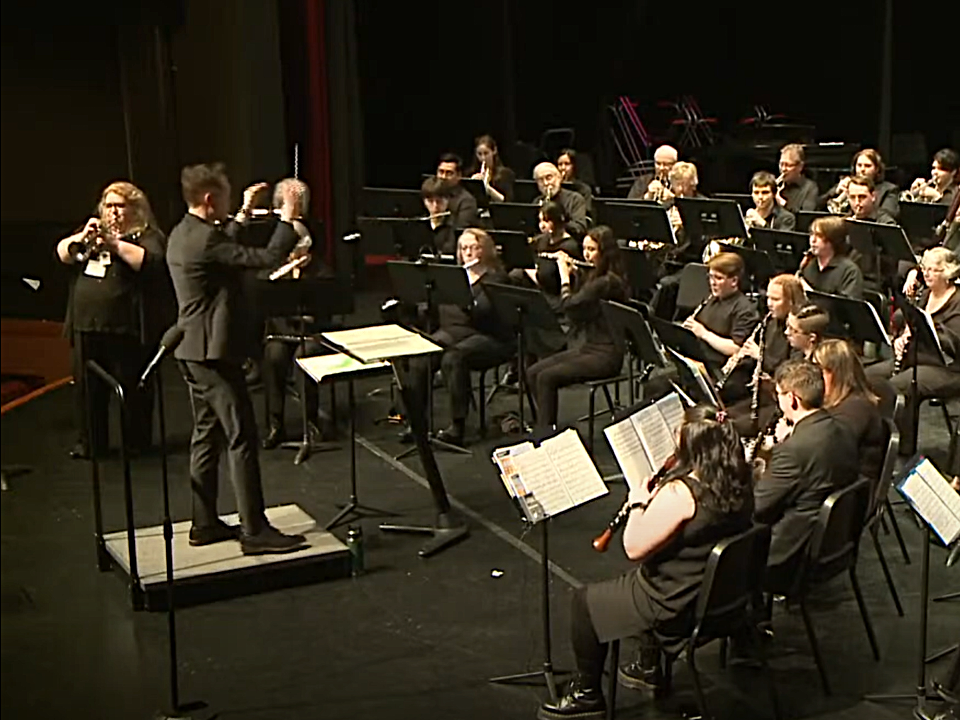PCCB performing "Centennnial Horizon" by Kevin McKee, featuring soloist Shelly Devlin.
The Vintage Band
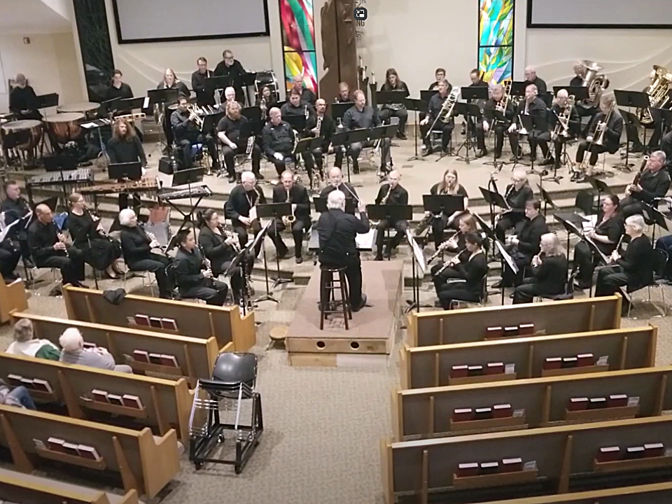VB performing "Korean Variations on a Korean Folk Song" by John Barnes Chance.
Evan was recruited for the Vintage Band in September of 2022 and has remained a member to this day.
The Vintage band is based in Des Moines, WA and performs around Veterans Day. The group performs a mixture of military and classical music composed by renowned composers. John Welsh, the director of the group is a former Conductor for the United States Air Force Band. His instruction boasts a disciplined approach that results in an efficient rehearsal. This has taught Evan much on how to make the most of group rehearsals.
Evan’s involvement with the Vintage Band has grown from that of a typical member to a veteran player with the group, taking on more responsibilities key to preparing the group for rehearsals and performances.
In Winter of 2023, Evan was invited to join the Highline Community Symphonic Band.
From the HCSB website: “The Highline Community Symphonic Band is dedicated to providing classical band music for the enjoyment and cultural enrichment of communities in and around the Highline area of South King County. [It] has come to be considered one of the premier community wind bands in this part of the country.” The group is currently under the direction of Corrine Smith.
While not a regular member with this group, Evan has been invited to join the group as a permanent percussionist, and plans on playing with the group when a percussionist is in need.
Highline Community Symphonic Band
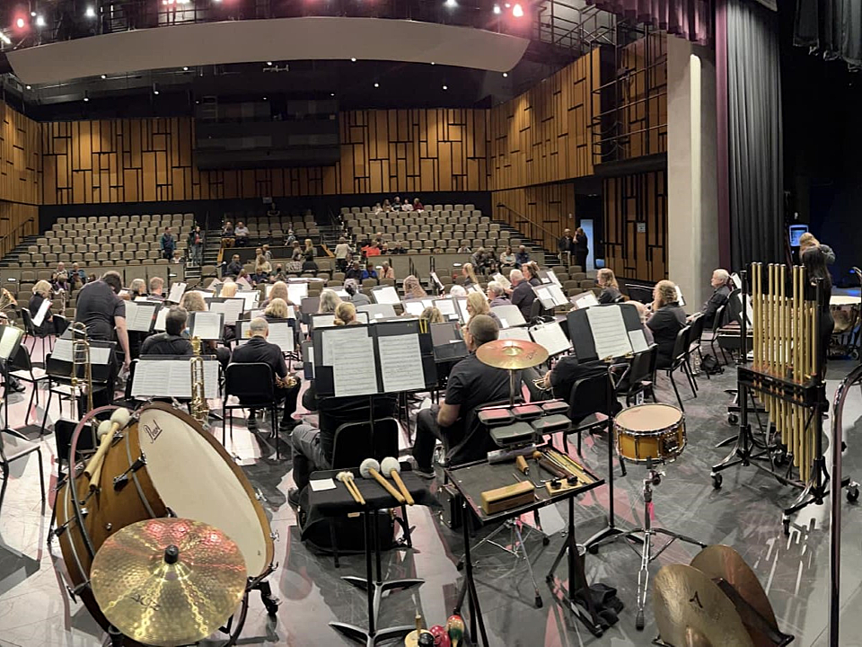HCSB setting up for their "Road Trip" concert at the Highline High School Theater.
Pierce College Orchestra
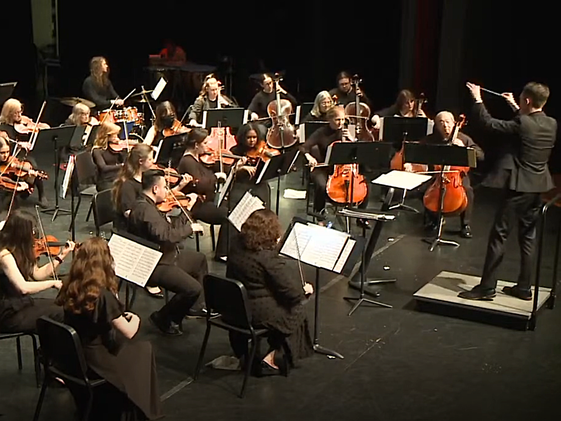Evan was the only non-string performer for this concert.
Evan was contracted to play with the Pierce College Orchestra for their March 2024 concert “Palladio” where he would perform in their finale piece: the popular 90’s Brit-pop song “Paranoid Android” by the English rock band Radiohead. Evan would accompany the orchestra on the drum set.
Evan is not a regular member of the Pierce College Orchestra, but his involvement in and around Pierce College makes him a go-to performer whenever a percussionist is needed for one of the groups concerts.
The Pierce College Orchestra is currently directed by Dr. Joseph Scott.
Evan was contracted in January of 2024 as a substitute for the Olympia Symphony Orchestra, where he would perform with the group as a concert percussionist at the Washington Center for Performing Arts.
The performance consisted of repertoire intended to impress and inspire children with classical and pop music in an symohony setting. The event hosted a field trip for students of the Olympia School District, where each student got to bring a recorder. In the symphony orchestra’s performance of “Ode to Joy” (Beethoven), over 400 students would accompany the piece on their recorders. Evan believed this to be a once in a life-time opportunity to witness something like this.
The group is directed by Alexander Arrieche.
Olympia Symphony Orchestra
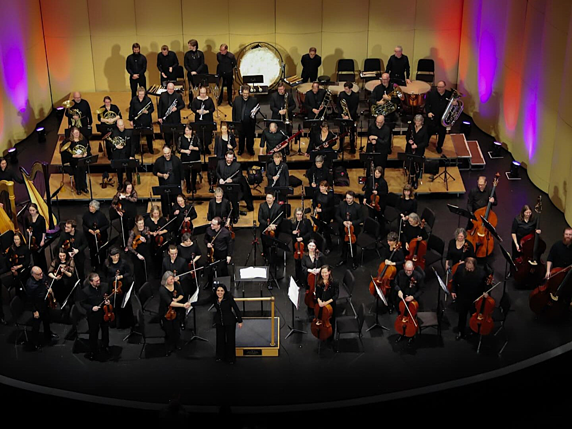A photo of the OSO taken before a performance.
Pierce College Hybrid Ensemble
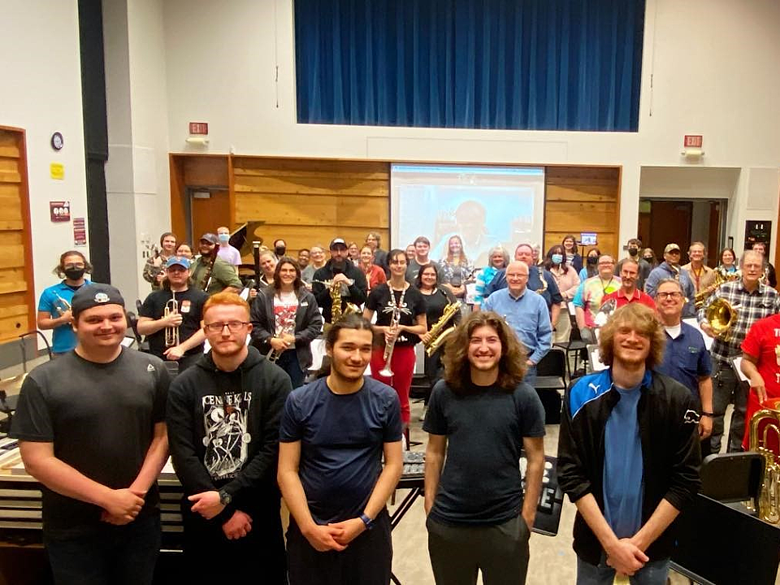Evan standing with the other percussionists of the PCHE in front of members of the PCCB.
Evan participated in the Pierce College Hybrid Ensemble who was headed by the samed director as the PCCB
Evan would perform repertoire in many genres on all manners of percussion. He was constantly exposed to the idea instruments and sounds are not static, and can be used in any context, only limited by the players creativity. Evan would play with this group until the Spring of 2023.
The ensemble was originally formed because of the COVID-19 pandemic in 2020. It began as an online “experiment” where music was recorded and made digitally. The group would start meeting in person in 2021 to perform music designed for the odd instrumentation “COVID-era” groups had.
Starting out as a music project for the PCHE in the Winter of 2022, Evan and his now partner Meaghan Austin would reform and co-direct the jazz group they named “Quarter After Nine” alongside their colleague Aydrian Kamu and other students for their upcoming Spring Concert.
Following the concert, the group would continue to rehearse and perform in the Pierce County WA area. Evan’s responsibilities included planning and running rehearsals, organizing performances, handling logistics (like uniforms and transportation) and handling the finances.
They would disband in the Spring of 2023 when several of its members had to part ways for university.
Quarter After Nine Jazz Band
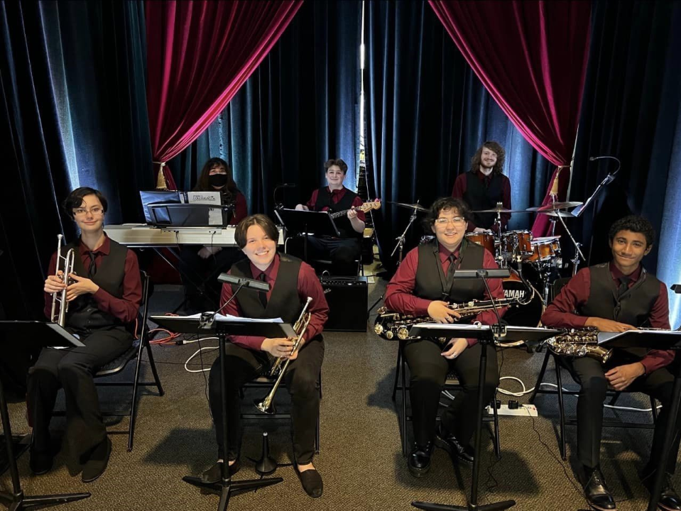Quarter After Nine performing for a Gala event in Fort Steilacoom, WA.
Gateway Concert Band
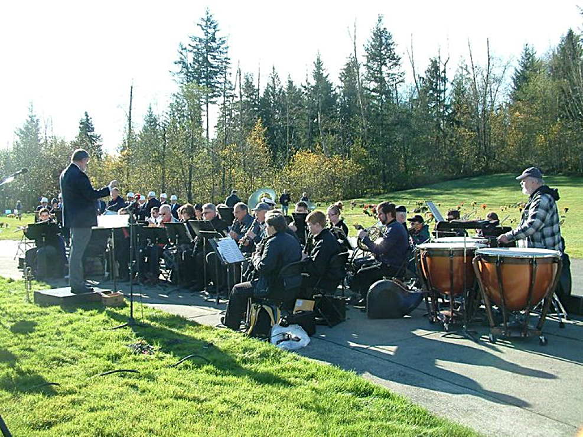The GCB performing at the Tahoma National Cemetary in WA.
In October of 2022, Evan was appoached by Jack Prindle, the director of The Gateway Concert Band and asked if he could perform as the snare drummer for a Veteran's Day Ceremony at the Washington State Tahoma National Cemetary.
The repertiore for the performance was strictly military, featuring several snare drum solos akin to those heard commonly in military marches, or emulating historic battlefield drumming. Evan joined the group for the performance with no prior rehearsing and performed each piece while sightreading many for the first time.
Although not officially a member, Evan has been invited to join the group as a permanent member.
Evan was invited to join the Tacoma Concert Band’s percussion section in March of 2022 to perform in their 2022 season finale “One Hand, One Heart” concert.
Directed by Dr. Gerard Morris, University of Puget Sound’s Director of Bands, TCB is a semi-professional (professional level playing, but members aren’t paid) concert band that performs a wide swath of classical and popular music.
TCB participates with the community through fellowships and competitions that give local hardworking musicians an opportunity to play with or even direct the band and learn directly from Dr. Morris and TCB's talented members.
Tacoma Concert Band
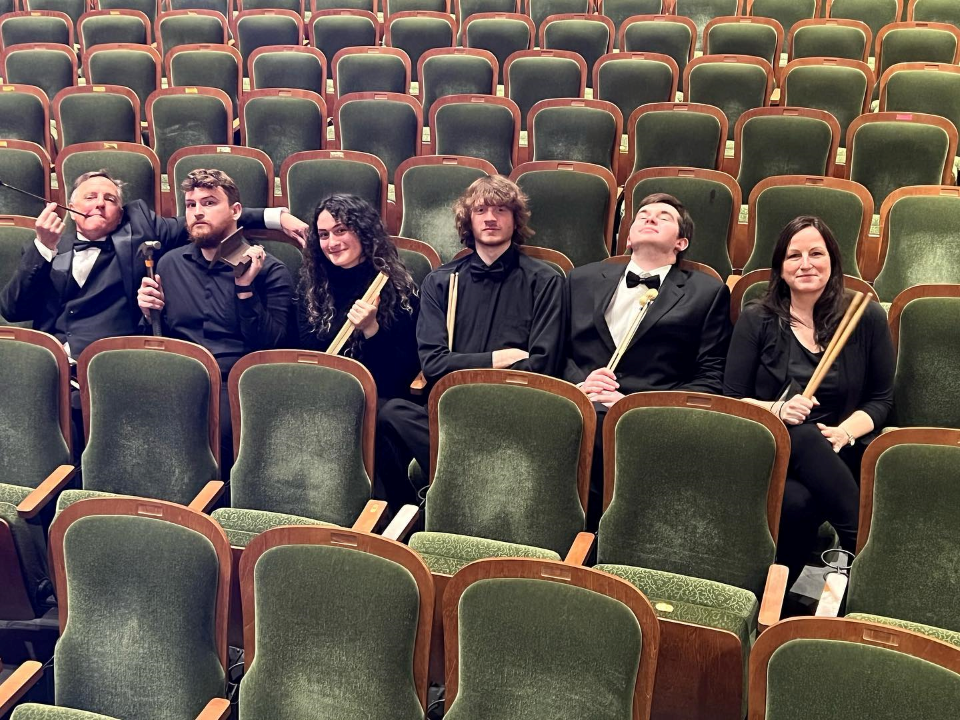Evan sitting for a group photo with the other TCB percussionists at Pantages Theater in Tacoma.
Pacific Lutheran University Percussion Ensemble
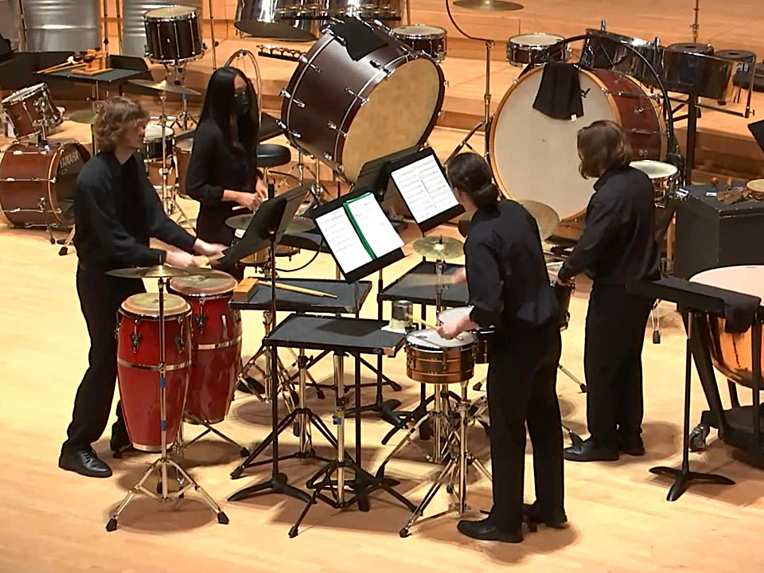Evan performing "Bon Temps" by Joe W. Moore III with other PLU percussionists."
Evan became involved with the Pacific Lutheran University Percussion Studio in 2018 after being introducted to Dr. Miho Takekawa and participating in an impromptu “musical spar” with her, where both performed for the other.
Despite never being a PLU student, Evan became regularly present in its percussion studio, aiding other students and even performing with the percussion ensemble several times over the course of 4 years, including a performance on drum-set with PLU's Steel Pan Ensemble.
Although never officially being affiliated with PLU, Evan keeps ties with the university’s faculty and students.
In 2017-2018, Evan attended Washington State University, and joined several of its marching-style musical groups.
The WSU Indoor Percussion ensemble is akin to a Winter Guard International (WGI) style of performance, where only modern-day drum-corps style percussion instruments are used in its music.
Evan played marching snare drum in a performance of “Race to Space V2” composed by WSU's Marching Percussion Professor Brent Edwards.
This group provided college credit, and its members were required to audition for their instrument.
Washington State University Indoor Percussion
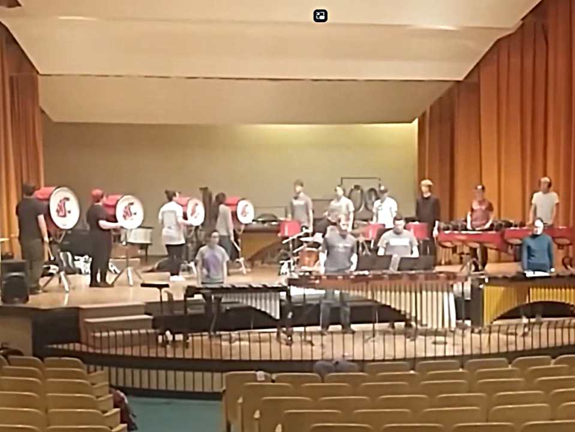In this photo, Evan is seen on the far right snare drum.
Cougar Basketball Drumline
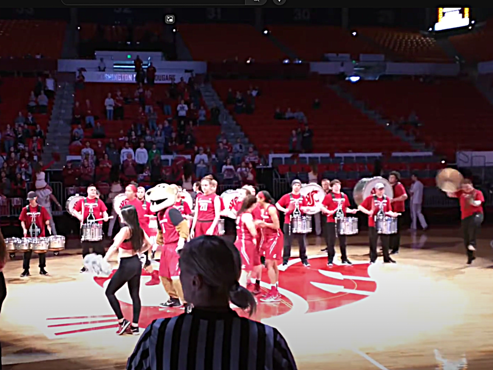WSU Basketball Drumline performing while the basketball starters are introduced.
Another group Evan participated in was WSU's Basketball Drumline. Under the instruction of Brent Edwards, the group would perform cadences and pre-game shows during PAC-12 college basketball games.
Evan played marching snare drum. The group provided opportunities for its regular members to fill the role as section leader for their instrument by letting them decide what cadences to perform, allowing them to tap-off, cut-off, and more.
This group provided college credit, and its members were required to audition for their instrument.
Evan’s primary involvement with WSU's athletic music department was his contributions to the WSU Cougar Marching Band and Drumline.
Evan was usually required to be present at rehearsals or events nearly every day of the week. PAC-12 football games necessitated the group's members being capable of learning a new field show every week, including music, field positions, and effects.
Evan landed a spot on the fourth snare position (out of nine) after several days of tryouts. At the time, WSU’s Cougar Marching Band was directed by Dr. Troy Bennefield, Dr. Sarah Miller, and Brent Edwards (Drumline Instructor).
This group provided college credit and a stipend.
Cougar Marching Band
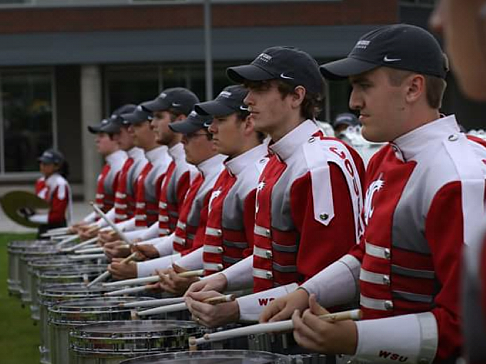The WSU Drumline warming up before they perform their game-day performance routines.
Cougar Soccer Drumline
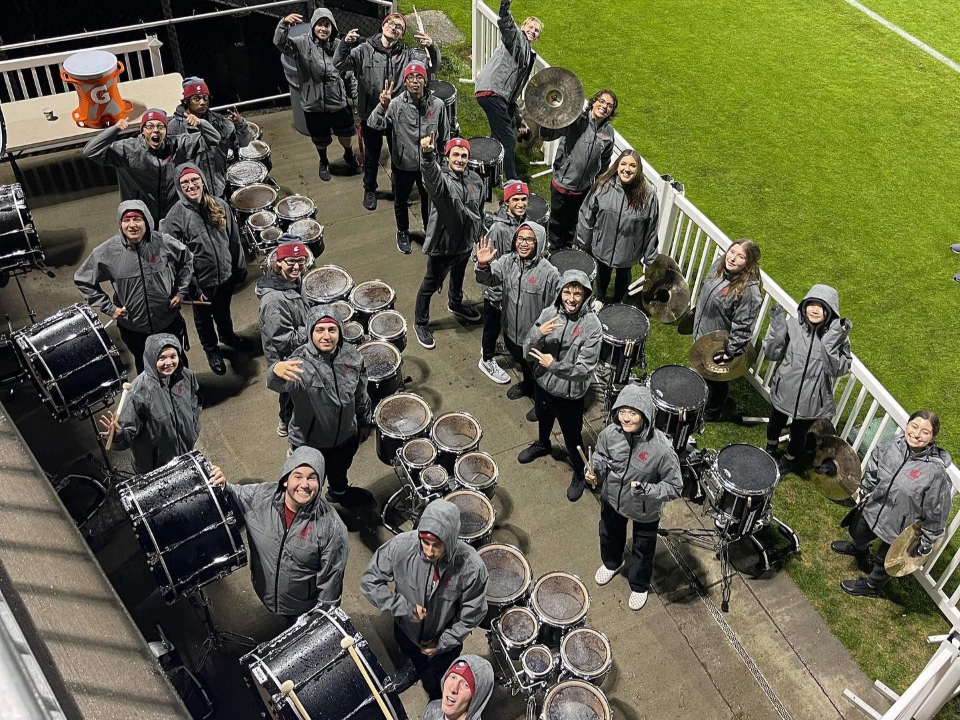WSU Soccor Drumline performing at a WSU Soccer Game.
>Alongside Evan’s involvement with the Cougar marching band was his commitment to the WSU Soccer Drumline.
Performing on snare drum, Evan and the rest of the group would hold a stadium performance presence by playing cadences during timeouts and occasionally through half-time. The primary purpose of the group was to build hype for the WSU soccer team, riling up crowds and bringing school spirit to the atmosphere of the game.
This was a voluntary group, but members must have passed auditions for the marching band.
Although not affiliated with WSU athletic bands or any part of its music department, students at WSU created an impromptu music group that performs around campus the Friday night before every football game, touring between Greek Row and other highly populated areas.
The members of the group change from week to week as it operates on a “come as you please” policy, but tends to pull from members of the WSU music program (especially its marching band). Despite being such a large group, ICB receives no funding or facilities from WSU and has no official director. It is purely a group made by students and remains completely unaffiliated.
Incognito Cougar Band
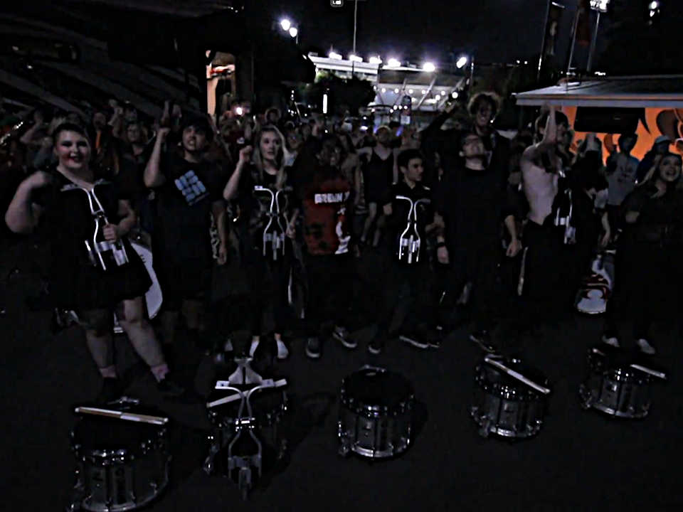ICB hyping up visitors at the RV lot near Martin Stadium.
Sumner High School Spartan Marching Band

SHS Marching Band performing during an SHS football game.
Between 2013-2017, Evan was a member of Sumner High School’s Spartan March Band.
He spent his first year as a Crash Cymbal, glockenspiel & bass drum player. Evan landed a position on snare drum during his sophomore year, which he would hold until he graduated. During his Junior year, Evan earned the center snare position and was named section leader for percussion, where he would organize sectionals, supervise rehearsals, and introduce repertoire for the section.
The same year, Emmanuel Olaiya, a former member of The Academy world-class drum corps' snareline was hired to be a full-time instructor for the drumline, where he would teach Evan much about drum-corps level rhudimental drumming, marching technique, and leadership styles.
Evan attended two Columbians Drum & Bugle Corps camps in the Winter of 2017-2018. These camps hosted upwards of 300 students ranging from ages 16 – 21, where students would spend an entire weekend learning and auditioning to be a part of the upcoming Columbians Drum Corps season.
These camps challenged participants to improve playing skills, marching skills, attention to finer detail, and playing perfection as a group. Evan participated in these camps as an aspiring marching snare drummer and received a callback after the first camp and was offered a contract to be a snare drummer during the second camp for the upcoming season. Due to personal circumstances, he had to decline the offer.
Columbians Drum & Bugle Corps Camps
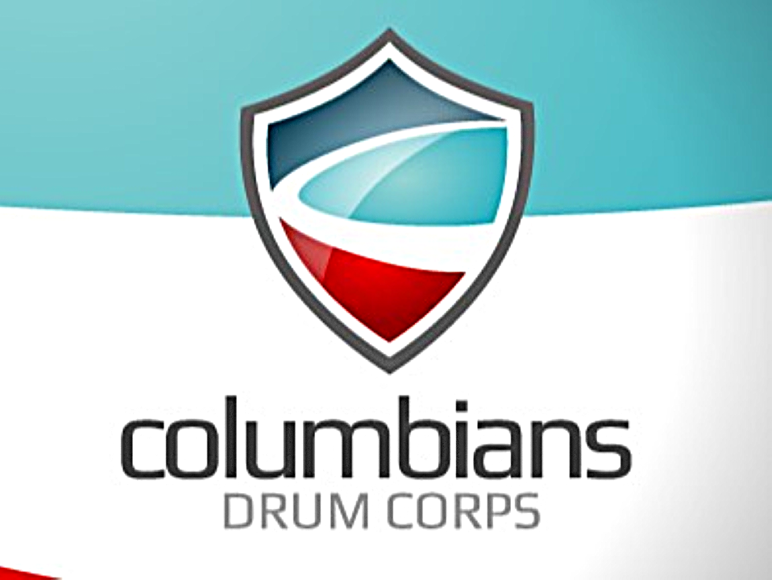The Columbians Drum & Bugle Corps is an open class division group from the Tri-cities in WA.